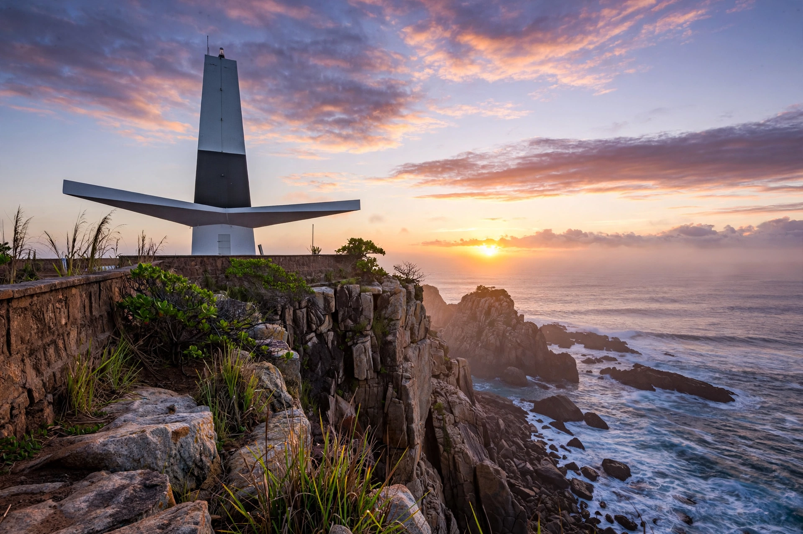

| Paraíba | |
 | |
| Country | Brazil |
|---|---|
| Capital | João Pessoa |
| Area | 56,440 km² |
| Population | about 4.0 million |
| Region | Northeast |
Paraíba is a state in northeastern Brazil, bordered by Rio Grande do Norte, Ceará and Pernambuco, and by the Atlantic Ocean. Its capital, João Pessoa, lies near Ponta do Seixas, the easternmost point of mainland South America, where the sun rises first in the Americas.
Founded as a captaincy in 1574, Paraíba was consolidated after wars with the Potiguara people and a period of Dutch occupation (1634–1654). In 1930 the assassination of the state's governor, João Pessoa, in Recife became one of the sparks of the Revolution of 1930 that brought Getúlio Vargas to power; the capital was renamed in his honour.
The state ranges from a fertile coastal strip through the agreste to the semi-arid sertão, including the Cariri region with its rock formations at Lajedo de Pai Mateus. Campina Grande, its second city, hosts one of Brazil's largest June festivals (São João). Paraíba is known for cotton, sisal, sugarcane and a growing footwear and textile industry, and its state flag bears the word NEGO ("I refuse"), recalling its 1930 refusal to accept a federally imposed vice-presidential candidate.